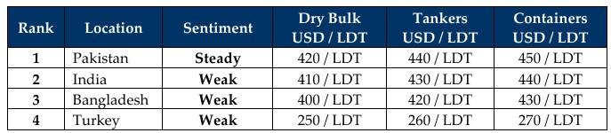

inWeekly Demolition Reports29/09/2025

Global markets seem to be going through quite a disconnect of late as on the one hand, the last couple of months has seen a multitude of directionsthat stock markets, trading markets, charter rates, financial and FX markets, and even the ship recycling markets have been greeted by versions of unfolding realities that seem to conflict with what’s been transpiring at the bidding tables of late. On the one hand, various reports have been consistently confirming positive movements in dry / trading markets, oil up and down (with more down expected), financial markets wreaking havoc on the global ship recycling industry, and ship recycling volumes seemingly improving over recent weeks (primarily in India). And this week was another roller coaster of confusion.
The Baltic Exchange Dry Bulk Index fell nearly 7 points on Friday as Capes, Panamax, and Supramax indices all slipped 14, 3, and 4 points respectively. Yet, the overall benchmark reported a net 2.5% positive gain for the entire sector, driven primarily by the strength of Capes that reportedly firmed another 5.5%. On the flip side, WTI crude slipped 1% down to USD 65 / barrel as Iraq’s Kurdistan region reportedly resuming crude oil exports after a 2.5-year hiatus, adding a near 190K barrel / day output that is expected to climb to 230K bpd. The restart pushed by U.S. pressure comes as OPEC+ eyes further outputs while risks to Russian supplies linger amidst their war of attrition.
The net trickledown effect of the above coupled with a quick stop at sanctions stations has seen ship recycling nation currencies unexpectedly take a royal hammering this week as Bangladesh, India and Turkey all reported declines in their currencies once again, while local steel plate prices flatlined across the board, expect in India. Ongoing macro market movements have also seen a degree of sporadic buying return to the ship recycling markets from certain needlessly optimistic cash buyers, which has punctuated what has been an overall gloomy 2025 for the ship recycling scene where supply, demand, and pricing have all suffered tragically.
In Bangladesh, recycled product is simply refusing to shift from frustrated end buyer yards (much as we have seen for a majority of the year), leaving the overall ship recycling scene in Chattogram lost at high seas. Pakistan, and surprisingly even India, appear to be the only bright spots over recent times with an increased demand and higher indicative pricing of late, even though there is still much in terms of HKC infrastructure upgrades left to accomplish in Gadani, given that not a single ship recycling facility is HKC ready here. And Gadani buyers have been left relying on provisional DASR certificates issued by local authorities in order to continue doing business.
As Fall gets fully under way with September 2025 entering its forever slumber next week, dimly lit hopes lie in wait for brighter times ahead, for a beleaguered ship recycling industry.
For Week 39 of 2025, GMS Market Rankings / vessel indications are as below.

📄 Download PDF: Ship-recycling-market-insight-Week-39-09-26-2025-Disconnect.pdfSource: GMS,Inc.https://www.gmsinc.net/gms_new/index.php/web